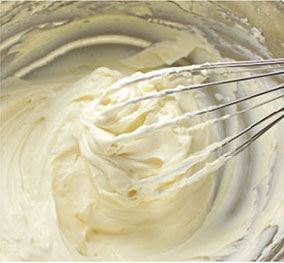

是英国本土品牌。2012年由上海印克电子商务有限公司正式将INCAKE品牌引入中国，并采用网络订购模式。秉承了传统英式手工艺的蛋糕制作，甄选新鲜优质食材，传承纯正英国风味。
- 关于我们
- 配送范围
- 联系我们
-

上海印克电子商务有限公司
专注于向顾客提供全方位的体验，并带来卓越的价值。INCAKE印克网络蛋糕打破了眼下传统的蛋糕销售模式，通过网络，移动端，客服热线全方位链接消费，一对一定制英式蛋糕服务。让客户体验购物新风尚。并在生产过程中强调对人价值的关注，对消费者、对环境、对社会的贡献。用心烘焙和真诚的笑容是INCAKE宗旨。优质的选材和源于英式经典配方是INCAKE印克蛋糕的核心竞争力。在中国，INCAKE不断投入产品研发创新，并保证英式蛋糕的纯正口味。引领着英式风潮。
下午茶
下午茶是英国传统的精华所在，一首英国民谣就是这样唱的：“当时钟敲响四下时，世上的一切瞬间为茶而停”。INCAKE作为英国的本土品牌，希望下午茶文化在中国得到更多人的认可与喜爱，成为生活中不可或缺的一部分。无论是传统下午茶的内涵丰硕、形式优雅。还是在忙里偷闲中的一杯茶饮配以英式蛋糕的简约下午茶。这不仅仅是一种对美食的渴望，更是每个人对生活的态度。INCAKE希望无论是朋友小聚、闲暇在家或是忙于工作，都能随时随地享受精致的生活品质。
-
GOLDEN PROPORTION黄金比例配方
INCAKE在进行几千次、几万次的烘焙失败，才搭配出来的烘培组合与比例，在制作每一款蛋糕时，蛋糕师都专注于每一个制作细节、遵守严苛的制作步骤和时间。传承纯正的英国皇室风味，每一种组合和配比都是经典时尚的邂逅。
 -
THE BEST MATERIALS优质食材
-
PERFECT PROCESS工艺
-
PRODUCTION STANDARD 生产标准
INCAKE秉诺用心烘焙、用心服务、用心打造一个让国人安心食用的健康烘焙品牌。食品安全是食品从业人的根基与责任，INCAKE目标成为广受大众欢迎烘焙品牌的同时，也将追求安全的烘焙列在企业文化首位。

-
-
-

为了给予您更优质贴心的服务,请拨打INCAKE 400-921-5757服务热线提出您的宝贵建议与任何疑问，INCAKE在此感谢您的支持。
-
上海（总部）
电话：021-26063569
招商热线：021-26063569-8051
传真：021-26063570
地址：上海闸北区广中西路777弄江裕大厦506室
-
昆山（分公司）
电话：0512-36821176
传真：0512-36821176
地址：江苏省昆山市人民北路65号
-
苏州（分公司）
电话：0512-67663257
传真：0512-67663257
地址：苏州市姑苏区东环路1627号
-
福州（分公司）
电话：0591-86397901
传真：0591-86395502
地址：福州市鼓楼区五一中路18号正大广场帝景台1205
-
厦门（分公司）
电话：0592-3227763
传真：0592-3227763
地址：厦门市湖里区蔡塘工业区10号厂房
-